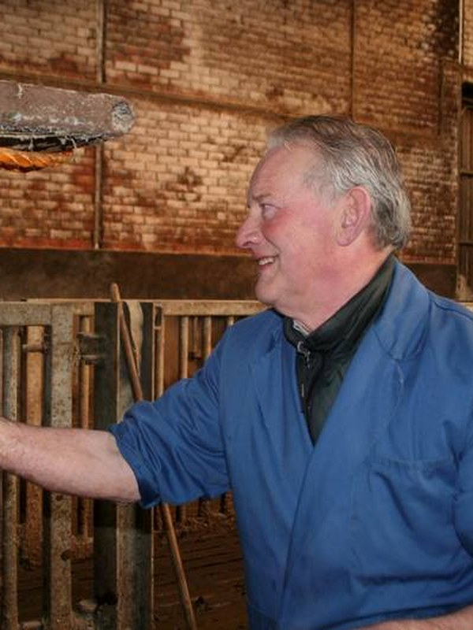

Dierenarts
Adelin De Vlieger
Adelin studeerde in 1970 af als dokter in de diergeneeskunde aan de toenmalige Rijksuniversiteit Gent. Hij startte daarna een van de eerste groepspraktijken van het land en legde zich vooral toe op rundvee. Door voortdurende bijscholing in diagnostiek en chirurgie en de begeleiding van nieuwe collega’s drukte hij een grote stempel op de huidige landbouwdierenpraktijk.